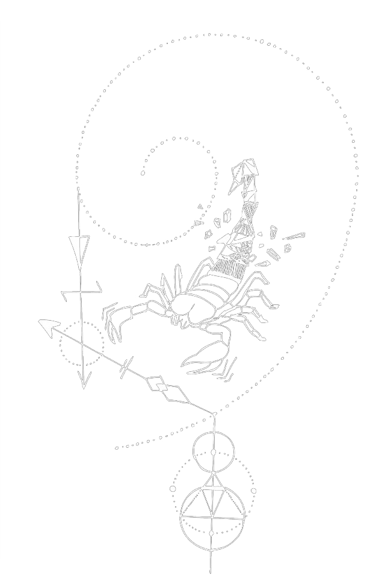

ventures outside of herself hiccuping constellations to divide the night sky
a scorpion and a cross
outlines a hunter a lion
breaking what is visibly related with boundaries drawn askew
lines of right ascension and left declination no longer perfectly vertical or horizontal yet
strikingfamilial patterns of bright stars and spits them out one by one